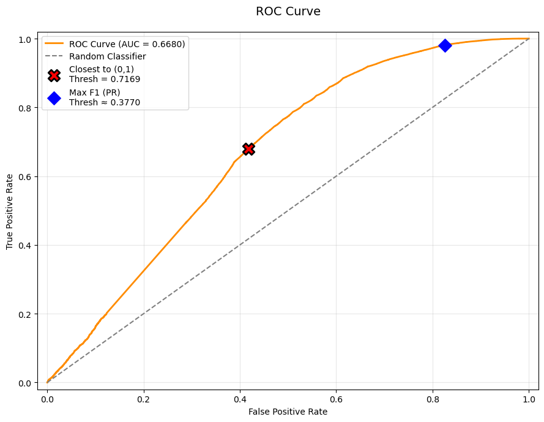
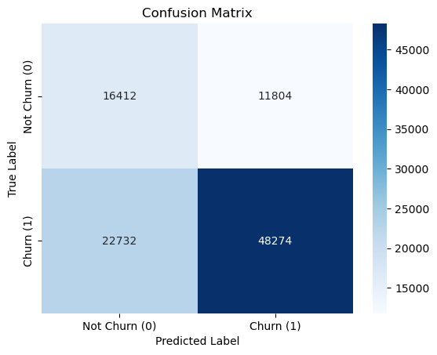
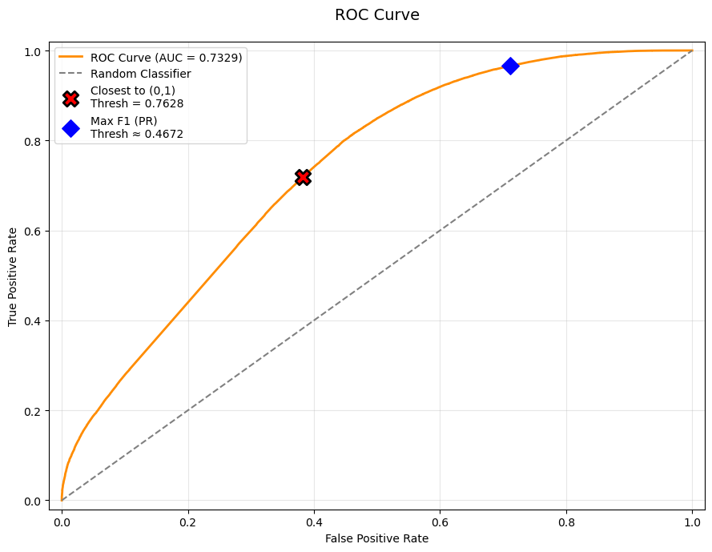
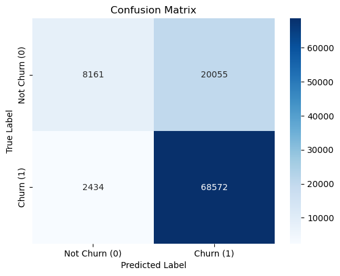
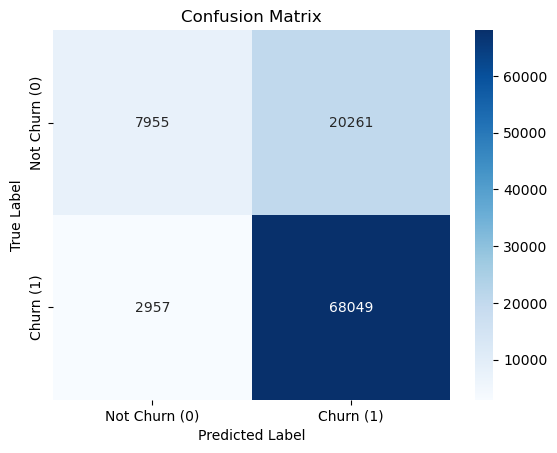
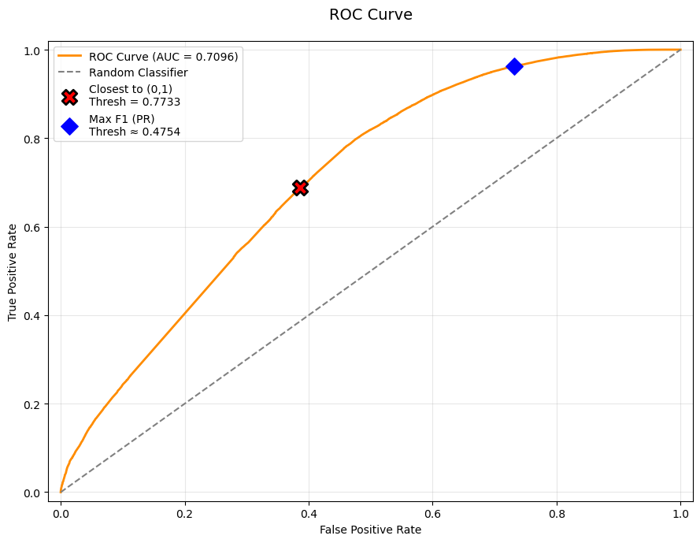
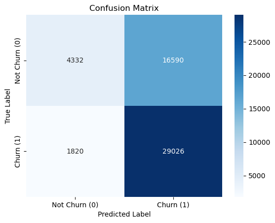
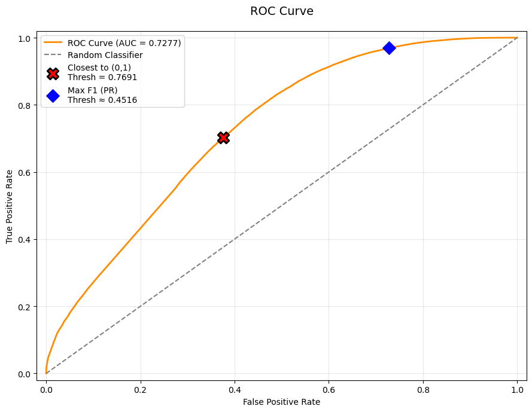
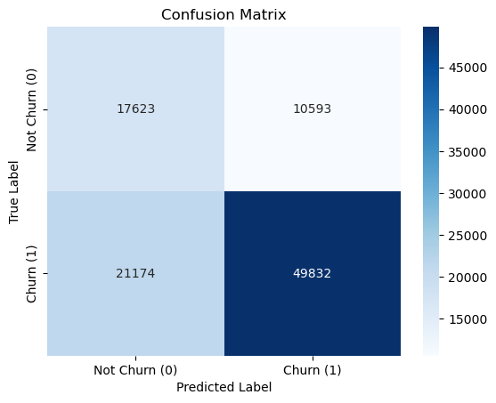

# Standard Package
import pandas as pd
import numpy as np
import matplotlib.pyplot as plt
import seaborn as sns
# datetime Package
from datetime import datetime
# Serialization Package
import joblib
# Classifier
from xgboost import XGBClassifier
from lightgbm import LGBMClassifier
from catboost import CatBoostClassifier
from sklearn.linear_model import LogisticRegression
# Evaluation metrics
from sklearn.metrics import accuracy_score, precision_score, recall_score, f1_score, roc_auc_score, confusion_matrix, roc_curve, precision_recall_curvedata = joblib.load("../data/processed/cleaned_data.pkl")
data.head()| Invoice | StockCode | Description | Quantity | InvoiceDate | Price | Customer ID | Country | Total_Price | |
|---|---|---|---|---|---|---|---|---|---|
| 0 | 489434 | 85048 | 15CM CHRISTMAS GLASS BALL 20 LIGHTS | 12 | 2009-12-01 07:45:00 | 6.95 | 13085 | United Kingdom | 83.4 |
| 1 | 489434 | 79323P | PINK CHERRY LIGHTS | 12 | 2009-12-01 07:45:00 | 6.75 | 13085 | United Kingdom | 81.0 |
| 2 | 489434 | 79323W | WHITE CHERRY LIGHTS | 12 | 2009-12-01 07:45:00 | 6.75 | 13085 | United Kingdom | 81.0 |
| 3 | 489434 | 22041 | RECORD FRAME 7" SINGLE SIZE | 48 | 2009-12-01 07:45:00 | 2.10 | 13085 | United Kingdom | 100.8 |
| 4 | 489434 | 21232 | STRAWBERRY CERAMIC TRINKET BOX | 24 | 2009-12-01 07:45:00 | 1.25 | 13085 | United Kingdom | 30.0 |
- Let’s Group the data by invoice.
groupby_invoice = data.groupby(['Invoice','InvoiceDate', 'Customer ID'])['Total_Price'].sum()
groupby_invoice = groupby_invoice.sort_values(ascending=False).reset_index()
groupby_invoice.head()| Invoice | InvoiceDate | Customer ID | Total_Price | |
|---|---|---|---|---|
| 0 | 493819 | 2010-01-07 12:34:00 | 14156 | 44051.60 |
| 1 | 524181 | 2010-09-27 16:59:00 | 17450 | 33167.80 |
| 2 | 526934 | 2010-10-14 09:46:00 | 18102 | 26007.08 |
| 3 | 515944 | 2010-07-15 15:29:00 | 18102 | 22863.36 |
| 4 | 517731 | 2010-08-01 13:31:00 | 18102 | 21984.00 |
- To see how often customers are doing transaction, lets calculate each customer transaction interpurchase time(IPT).
groupby_invoice = groupby_invoice.sort_values(['Customer ID', 'InvoiceDate'])
groupby_invoice['IPT'] = groupby_invoice.groupby('Customer ID')['InvoiceDate'].diff().dt.days
groupby_invoice.head()| Invoice | InvoiceDate | Customer ID | Total_Price | IPT | |
|---|---|---|---|---|---|
| 17989 | 491725 | 2009-12-14 08:34:00 | 12346 | 45.0 | NaN |
| 18532 | 491742 | 2009-12-14 11:00:00 | 12346 | 22.5 | 0.0 |
| 18533 | 491744 | 2009-12-14 11:02:00 | 12346 | 22.5 | 0.0 |
| 18525 | 492718 | 2009-12-18 10:47:00 | 12346 | 22.5 | 3.0 |
| 19236 | 492722 | 2009-12-18 10:55:00 | 12346 | 1.0 | 0.0 |
cust_ipt = groupby_invoice.groupby('Customer ID')['IPT'].median()
# median IPT overall
median_ipt = cust_ipt.median()
median_ipt44.0- The median interpurchase time is 44 days \(\approx\) 6 weeks
- Using this as a reference, let’s define a 12-week (2 cycles) Observation Window (OW) and a 6-week Performance Window (PW) for the churn prediction.
- This means that the 12 week window will be used to predict whether the customer will churn in the following 6 week period.
- In real production systems, the current week’s transaction data is incomplete (still ongoing). Therefore, we cannot safely use it in the observation window.
- So, set a 1-week gap period.
groupby_invoice['Week'] = groupby_invoice['InvoiceDate'].dt.isocalendar().week
groupby_invoice['Year'] = groupby_invoice['InvoiceDate'].dt.year
# Validation
groupby_invoice.head()| Invoice | InvoiceDate | Customer ID | Total_Price | IPT | Week | Year | |
|---|---|---|---|---|---|---|---|
| 17989 | 491725 | 2009-12-14 08:34:00 | 12346 | 45.0 | NaN | 51 | 2009 |
| 18532 | 491742 | 2009-12-14 11:00:00 | 12346 | 22.5 | 0.0 | 51 | 2009 |
| 18533 | 491744 | 2009-12-14 11:02:00 | 12346 | 22.5 | 0.0 | 51 | 2009 |
| 18525 | 492718 | 2009-12-18 10:47:00 | 12346 | 22.5 | 3.0 | 51 | 2009 |
| 19236 | 492722 | 2009-12-18 10:55:00 | 12346 | 1.0 | 0.0 | 51 | 2009 |
groupby_invoice = groupby_invoice.sort_values(['InvoiceDate', 'Week'])
# Validation
groupby_invoice.head()| Invoice | InvoiceDate | Customer ID | Total_Price | IPT | Week | Year | |
|---|---|---|---|---|---|---|---|
| 4485 | 489434 | 2009-12-01 07:45:00 | 13085 | 505.30 | NaN | 49 | 2009 |
| 14907 | 489435 | 2009-12-01 07:46:00 | 13085 | 145.80 | 0.0 | 49 | 2009 |
| 3153 | 489436 | 2009-12-01 09:06:00 | 13078 | 630.33 | NaN | 49 | 2009 |
| 9031 | 489437 | 2009-12-01 09:08:00 | 15362 | 310.75 | NaN | 49 | 2009 |
| 365 | 489438 | 2009-12-01 09:24:00 | 18102 | 2286.24 | NaN | 49 | 2009 |
- Our Data is starting from 1 Desember 2009 (week 49), set it to be the first week (- 48).
groupby_invoice['WeekIndex'] = (groupby_invoice['Year'] - groupby_invoice['Year'].min()) * 52 + groupby_invoice['Week'] - 48
display(groupby_invoice.head())
# Check the number of week available in the data
print("Number of weeks in the Data:", groupby_invoice['WeekIndex'].max())| Invoice | InvoiceDate | Customer ID | Total_Price | IPT | Week | Year | WeekIndex | |
|---|---|---|---|---|---|---|---|---|
| 4485 | 489434 | 2009-12-01 07:45:00 | 13085 | 505.30 | NaN | 49 | 2009 | 1 |
| 14907 | 489435 | 2009-12-01 07:46:00 | 13085 | 145.80 | 0.0 | 49 | 2009 | 1 |
| 3153 | 489436 | 2009-12-01 09:06:00 | 13078 | 630.33 | NaN | 49 | 2009 | 1 |
| 9031 | 489437 | 2009-12-01 09:08:00 | 15362 | 310.75 | NaN | 49 | 2009 | 1 |
| 365 | 489438 | 2009-12-01 09:24:00 | 18102 | 2286.24 | NaN | 49 | 2009 | 1 |
Number of weeks in the Data: 53Creating Weekly Log ( 1= transacting, 0 = not transacting)
unique_customers = groupby_invoice['Customer ID'].unique()
# Create weeklylog dataframe consist of zeros
weekly_log = pd.DataFrame(0, index = unique_customers, columns = np.arange(1,54))
weekly_log.head()| 1 | 2 | 3 | 4 | 5 | 6 | 7 | 8 | 9 | 10 | ... | 44 | 45 | 46 | 47 | 48 | 49 | 50 | 51 | 52 | 53 | |
|---|---|---|---|---|---|---|---|---|---|---|---|---|---|---|---|---|---|---|---|---|---|
| 13085 | 0 | 0 | 0 | 0 | 0 | 0 | 0 | 0 | 0 | 0 | ... | 0 | 0 | 0 | 0 | 0 | 0 | 0 | 0 | 0 | 0 |
| 13078 | 0 | 0 | 0 | 0 | 0 | 0 | 0 | 0 | 0 | 0 | ... | 0 | 0 | 0 | 0 | 0 | 0 | 0 | 0 | 0 | 0 |
| 15362 | 0 | 0 | 0 | 0 | 0 | 0 | 0 | 0 | 0 | 0 | ... | 0 | 0 | 0 | 0 | 0 | 0 | 0 | 0 | 0 | 0 |
| 18102 | 0 | 0 | 0 | 0 | 0 | 0 | 0 | 0 | 0 | 0 | ... | 0 | 0 | 0 | 0 | 0 | 0 | 0 | 0 | 0 | 0 |
| 12682 | 0 | 0 | 0 | 0 | 0 | 0 | 0 | 0 | 0 | 0 | ... | 0 | 0 | 0 | 0 | 0 | 0 | 0 | 0 | 0 | 0 |
5 rows × 53 columns
# Fill the data
for cust, group in groupby_invoice.groupby('Customer ID'):
weeks = group['WeekIndex'].unique()
weekly_log.loc[cust, weeks] = 1
#Validation
weekly_log.head()| 1 | 2 | 3 | 4 | 5 | 6 | 7 | 8 | 9 | 10 | ... | 44 | 45 | 46 | 47 | 48 | 49 | 50 | 51 | 52 | 53 | |
|---|---|---|---|---|---|---|---|---|---|---|---|---|---|---|---|---|---|---|---|---|---|
| 13085 | 1 | 0 | 0 | 0 | 0 | 0 | 0 | 1 | 0 | 0 | ... | 0 | 0 | 0 | 0 | 0 | 0 | 0 | 0 | 0 | 0 |
| 13078 | 1 | 1 | 1 | 0 | 1 | 0 | 1 | 0 | 1 | 0 | ... | 0 | 1 | 0 | 1 | 0 | 1 | 1 | 1 | 1 | 1 |
| 15362 | 1 | 0 | 0 | 0 | 0 | 0 | 0 | 0 | 0 | 0 | ... | 0 | 0 | 0 | 0 | 0 | 0 | 0 | 0 | 0 | 0 |
| 18102 | 1 | 1 | 1 | 1 | 1 | 1 | 0 | 0 | 1 | 0 | ... | 0 | 1 | 0 | 0 | 0 | 1 | 1 | 0 | 0 | 1 |
| 12682 | 1 | 1 | 0 | 1 | 0 | 1 | 0 | 0 | 1 | 1 | ... | 0 | 1 | 0 | 0 | 0 | 1 | 1 | 0 | 1 | 1 |
5 rows × 53 columns
weekly_log.shape(4314, 53)- We have 4314 Customer and 53 weeks of transaction log
- Let’s also make the spending log of each transaction
def create_weekly_spending_log(df):
df = df.copy()
df["WeekIndex"] = df["InvoiceDate"].dt.isocalendar().week
# pivot -> customers as rows, week as columns, values = total spending
spending_log = df.pivot_table(
index="Customer ID",
columns="Week",
values="Total_Price",
aggfunc="sum",
fill_value=0
)
return spending_logspending_log = create_weekly_spending_log(groupby_invoice)
spending_log.head()| Week | 1 | 2 | 3 | 4 | 5 | 6 | 7 | 8 | 9 | 10 | ... | 43 | 44 | 45 | 46 | 47 | 48 | 49 | 50 | 51 | 52 |
|---|---|---|---|---|---|---|---|---|---|---|---|---|---|---|---|---|---|---|---|---|---|
| Customer ID | |||||||||||||||||||||
| 12346 | 45.0 | 22.5 | 22.5 | 0.0 | 0.0 | 0.0 | 0.0 | 0.0 | 27.05 | 0.0 | ... | 0.00 | 0.0 | 0.0 | 0.0 | 0.0 | 0.00 | 0.00 | 0.0 | 113.5 | 0.0 |
| 12347 | 0.0 | 0.0 | 0.0 | 0.0 | 0.0 | 0.0 | 0.0 | 0.0 | 0.00 | 0.0 | ... | 611.53 | 0.0 | 0.0 | 0.0 | 0.0 | 0.00 | 711.79 | 0.0 | 0.0 | 0.0 |
| 12348 | 0.0 | 0.0 | 0.0 | 0.0 | 0.0 | 0.0 | 0.0 | 0.0 | 0.00 | 0.0 | ... | 0.00 | 0.0 | 0.0 | 0.0 | 0.0 | 0.00 | 0.00 | 0.0 | 0.0 | 0.0 |
| 12349 | 0.0 | 0.0 | 0.0 | 0.0 | 0.0 | 0.0 | 0.0 | 0.0 | 0.00 | 0.0 | ... | 1402.62 | 0.0 | 0.0 | 0.0 | 0.0 | 0.00 | 0.00 | 0.0 | 0.0 | 0.0 |
| 12351 | 0.0 | 0.0 | 0.0 | 0.0 | 0.0 | 0.0 | 0.0 | 0.0 | 0.00 | 0.0 | ... | 0.00 | 0.0 | 0.0 | 0.0 | 0.0 | 300.93 | 0.00 | 0.0 | 0.0 | 0.0 |
5 rows × 52 columns
# Save the Data
joblib.dump(weekly_log,"../data/processed/weekly_transaction_log.pkl")
joblib.dump(spending_log,"../data/processed/weekly_spending_log.pkl")['../data/processed/weekly_spending_log.pkl']- Generate RFM+T features from the past 12-week to predict the following 6-week
- Churn label: not doing any transaction in the 6-week performance window.
def recency(row):
"""
Weeks since last purchase in observation window.
If no purchase → Recency = full OW length
"""
if row.sum() == 0:
return len(row)
last_active_idx = (row > 0).values.nonzero()[0][-1] # getting latest purchase week
return len(row) - last_active_idx -1 # -1 because the index start from 0
def frequency(subset):
return subset.sum(axis=1)
def tenure(first_purchase_week_series, ow_end_week):
"""
Tenure = How long customer has been "alive" until OW_End
if customer havent done any transaction → Tenure = 0
"""
tenure_val = ow_end_week - first_purchase_week_series + 1
return tenure_val.clip(lower=0)
def churn_label(log, pw_start_idx, pw_end_idx):
pw_subset = log.iloc[:, pw_start_idx:pw_end_idx + 1]
return (pw_subset.sum(axis=1) == 0).astype(int)
def compute_window(log, spending_log, ow_start_idx, ow_end_idx, pw_start_idx, pw_end_idx,
ow_start_week, ow_end_week, pw_start_week, pw_end_week):
"""
Hitung semua fitur untuk satu window
"""
# Observation Window
log_ow = log.iloc[:, ow_start_idx:ow_end_idx + 1]
spending_ow = spending_log.iloc[:, ow_start_idx:ow_end_idx + 1]
# RFM
freq = frequency(log_ow)
rec = log_ow.apply(recency, axis=1)
monetary = spending_ow.sum(axis=1)
aov = monetary / freq.replace(0, np.nan)
aov = aov.fillna(0)
# First purchase week
first_purchase_week = (log > 0).idxmax(axis=1).astype(int)
# Tenure
tenure_val = tenure(first_purchase_week, ow_end_week)
# Churn label
churn = churn_label(log, pw_start_idx, pw_end_idx)
# Build DataFrame
df = pd.DataFrame({
'Customer' : log.index,
'Window_End' : ow_end_week,
'OW_Start_Week' : ow_start_week,
'OW_End_Week' : ow_end_week,
'PW_Start_Week' : pw_start_week,
'PW_End_Week' : pw_end_week,
'Recency' : rec.values,
'Frequency' : freq.values,
'Monetary' : monetary.values,
'AOV' : aov.values,
'Tenure' : tenure_val.values,
'Churn' : churn.values
})
return df
def sliding_rfm_churn(log, spending_log,
ow_weeks=12,
pw_weeks=6,
gap_weeks=1):
total_weeks = log.shape[1] # 53
records = []
# 53 - 1 - 6 = 46
max_ow_end_week = total_weeks - gap_weeks - pw_weeks
for ow_end_week in range(ow_weeks, max_ow_end_week + 1): # [12 to 46 +1)
ow_start_week = ow_end_week - ow_weeks + 1 # week 1, 2, ...
# (index 0 = week 1)
ow_start_idx = ow_start_week - 1
ow_end_idx = ow_end_week - 1
# Prediction Window
pw_start_week = ow_end_week + gap_weeks + 1 # 12 + 1 + 1 = 14 (start)
pw_end_week = pw_start_week + pw_weeks - 1 # 14 + 6 - 1 = 19 (end)
# (index 0 = week 1)
pw_start_idx = pw_start_week - 1
pw_end_idx = pw_end_week - 1
if pw_end_idx >= total_weeks:
continue
window_df = compute_window(
log=log,
spending_log=spending_log,
ow_start_idx=ow_start_idx,
ow_end_idx=ow_end_idx,
pw_start_idx=pw_start_idx,
pw_end_idx=pw_end_idx,
ow_start_week=ow_start_week,
ow_end_week=ow_end_week,
pw_start_week=pw_start_week,
pw_end_week=pw_end_week
)
records.append(window_df)
if not records:
raise ValueError("No windows generated!")
return pd.concat(records, ignore_index=True)rfm_churn_all = sliding_rfm_churn(weekly_log, spending_log, ow_weeks=12,
pw_weeks=6,
gap_weeks=1)
# Validation
rfm_churn_all.head()| Customer | Window_End | OW_Start_Week | OW_End_Week | PW_Start_Week | PW_End_Week | Recency | Frequency | Monetary | AOV | Tenure | Churn | |
|---|---|---|---|---|---|---|---|---|---|---|---|---|
| 0 | 13085 | 12 | 1 | 12 | 14 | 19 | 4 | 2 | 117.05 | 29.2625 | 12 | 1 |
| 1 | 13078 | 12 | 1 | 12 | 14 | 19 | 1 | 7 | 0.00 | 0.0000 | 12 | 0 |
| 2 | 15362 | 12 | 1 | 12 | 14 | 19 | 11 | 1 | 0.00 | 0.0000 | 12 | 1 |
| 3 | 18102 | 12 | 1 | 12 | 14 | 19 | 0 | 9 | 0.00 | 0.0000 | 12 | 0 |
| 4 | 12682 | 12 | 1 | 12 | 14 | 19 | 0 | 7 | 0.00 | 0.0000 | 12 | 0 |
- We can see from the first row that the features is extracted from week 1 to 12 and the label from week 14-19 with week 13 as the gap week.
- Now, let’s see the churn proportion of our data
rfm_churn_all['Churn'].value_counts(normalize=True)Churn
1 0.674561
0 0.325439
Name: proportion, dtype: float64- We don’t need to use resampling techniques because the proportions aren’t severely imbalanced.
- We need to split the data to test and train set.
- Since we need at least 19 weeks of data to create a set, then the training set should end on week 53 - 19 = 34 and test set start on week 35.
rfm_churn_test = rfm_churn_all[rfm_churn_all['Window_End']>= 35]
rfm_churn_train = rfm_churn_all[~(rfm_churn_all['Window_End']>= 35)]Modelling
Let’s fit our training data to the classifier. We’ll start with logistic regression.
Logistic Regression
X_train = rfm_churn_train[['Frequency','Recency','Monetary','Tenure']] # feature
y_train = rfm_churn_train['Churn'] # target
model_logreg = LogisticRegression()
model_logreg.fit(X_train, y_train)LogisticRegression()In a Jupyter environment, please rerun this cell to show the HTML representation or trust the notebook.
On GitHub, the HTML representation is unable to render, please try loading this page with nbviewer.org.
Parameters
| penalty | 'l2' | |
| dual | False | |
| tol | 0.0001 | |
| C | 1.0 | |
| fit_intercept | True | |
| intercept_scaling | 1 | |
| class_weight | None | |
| random_state | None | |
| solver | 'lbfgs' | |
| max_iter | 100 | |
| multi_class | 'deprecated' | |
| verbose | 0 | |
| warm_start | False | |
| n_jobs | None | |
| l1_ratio | None |
- to be able to fully assess the model’s performance, let’s create an evaluation function.
def eval_metrics(y_true, y_pred, y_prob):
acc = accuracy_score(y_true, y_pred)
prec = precision_score(y_true, y_pred)
rec = recall_score(y_true, y_pred)
f1 = f1_score(y_true, y_pred)
auc_score = roc_auc_score(y_true, y_prob)
cm = confusion_matrix(y_true, y_pred)
print("Accuracy :", acc)
print("Precision :", prec)
print("Recall :", rec)
print("F1-score :", f1)
print("ROC-AUC :", auc_score)
# --- Confusion Matrix ---
sns.heatmap(cm, annot=True, fmt="d", cmap="Blues")
plt.title("Confusion Matrix")
plt.xlabel("Predicted Label")
plt.ylabel("True Label")
plt.gca().set_xticklabels(["Not Churn (0)", "Churn (1)"])
plt.gca().set_yticklabels(["Not Churn (0)", "Churn (1)"])
plt.show()y_pred = model_logreg.predict(X_train)
y_prob = model_logreg.predict_proba(X_train)[:,1]
eval_metrics(y_train, y_pred, y_prob)Accuracy : 0.7528773860635746
Precision : 0.7544055515422167
Recall : 0.9706785342083768
F1-score : 0.8489850216791486
ROC-AUC : 0.6679770526047065- To tune the prediction threshold, let’s create a function to visualise the ROC-AUC curve and the optimal threshold point.
- Let’s evaluate these 2 threshold tuning strategy:
- threshold that maximises the F1 score
- threshold that closest to (0, 1).
def optimal_threshold(y_true, y_prob, show_plot=True):
y_true = np.array(y_true)
y_prob = np.array(y_prob)
# ROC Curve
fpr, tpr, roc_thresh = roc_curve(y_true, y_prob)
auc = roc_auc_score(y_true, y_prob)
# Precision-Recall Curve + Max F1
precision, recall, pr_thresh = precision_recall_curve(y_true, y_prob)
f1_scores = 2 * recall * precision / (recall + precision + 1e-12)
best_f1_idx = np.argmax(f1_scores)
thresh_f1 = pr_thresh[best_f1_idx]
best_f1 = f1_scores[best_f1_idx]
# Closest to top-left corner (0,1)
distance = np.sqrt(fpr**2 + (1 - tpr)**2)
best_corner_idx = np.argmin(distance)
thresh_corner = roc_thresh[best_corner_idx]
dist_min = distance[best_corner_idx]
# Print all the result
print(f"ROC AUC Score: {auc}")
print(f"Best Threshold (Max F1) {thresh_f1}")
print(f"Best Threshold (Closest to (0,1)): {thresh_corner}")
# Plotting
fig, ax = plt.subplots(1, 1, figsize=(9, 7))
ax.plot(fpr, tpr, label=f'ROC Curve (AUC = {auc:.4f})', linewidth=2, color='darkorange')
ax.plot([0, 1], [0, 1], '--', color='gray', label='Random Classifier')
# Closest to (0,1)
ax.scatter(fpr[best_corner_idx], tpr[best_corner_idx],
color='red', s=180, zorder=5, marker='X', edgecolors='black', linewidth=2,
label=f'Closest to (0,1)\nThresh = {thresh_corner:.4f}')
# Max F1 point
idx_f1_roc = np.argmin(np.abs(roc_thresh - thresh_f1))
ax.scatter(fpr[idx_f1_roc], tpr[idx_f1_roc],
color='blue', s=120, zorder=5, marker='D',
label=f'Max F1 (PR)\nThresh ≈ {thresh_f1:.4f}')
ax.set_xlabel('False Positive Rate')
ax.set_ylabel('True Positive Rate')
ax.set_title('ROC Curve', fontsize=14, pad=20)
ax.legend()
ax.grid(True, alpha=0.3)
ax.set_xlim(-0.02, 1.02)
ax.set_ylim(-0.02, 1.02)
plt.tight_layout()
plt.show()
return thresh_f1, thresh_cornerthresh_f1, thresh_corner = optimal_threshold(y_train, y_prob)ROC AUC Score: 0.6679770526047065
Best Threshold (Max F1) 0.3770395242420077
Best Threshold (Closest to (0,1)): 0.7169313717896574
- Let’s see how each threshold perform on the training data
y_pred_f1 = (y_prob >= thresh_f1).astype(int)
eval_metrics(y_train, y_pred_f1, y_prob)Accuracy : 0.751788917780331
Precision : 0.7494674785377714
Recall : 0.9811283553502521
F1-score : 0.8497926323493535
ROC-AUC : 0.6679770526047065
y_pred_corner = (y_prob >= thresh_corner).astype(int)
eval_metrics(y_train, y_pred_corner, y_prob)Accuracy : 0.6519320312027574
Precision : 0.8035220879523286
Recall : 0.6798580401656198
F1-score : 0.7365353513777425
ROC-AUC : 0.6679770526047065
- The threshold obtained by maximizing F1 yields a noticeably higher recall compared to the threshold from the closest-to-(0,1) method.
- Given that catching churned customers are more important than keeping the prediction list perfectly clean (precision), we should go with the Max F1 threshold
# Testing it on the test set
best_threshold = thresh_f1
X_test = rfm_churn_test[['Frequency','Recency','Monetary','Tenure']]
y_test = rfm_churn_test['Churn']
y_prob_test = model_logreg.predict_proba(X_test)[:,1]
y_pred_test = (y_prob_test >= best_threshold).astype(int)
eval_metrics(y_test, y_pred_test, y_prob_test)Accuracy : 0.6356243239066605
Precision : 0.6247008137865007
Recall : 0.9730597160085587
F1-score : 0.7609040092276881
ROC-AUC : 0.565838093017762
joblib.dump(
{"model": model_logreg, "threshold": best_threshold},
'../models/logreg_and_threshold.pkl'
)['../models/logreg_and_threshold.pkl']- Now let’s try it on other models (XGBoost, Lightgbm, CatBoost).
XGBOOST
model_xgb = XGBClassifier()
model_xgb.fit(X_train, y_train)XGBClassifier(base_score=None, booster=None, callbacks=None,
colsample_bylevel=None, colsample_bynode=None,
colsample_bytree=None, device=None, early_stopping_rounds=None,
enable_categorical=False, eval_metric=None, feature_types=None,
feature_weights=None, gamma=None, grow_policy=None,
importance_type=None, interaction_constraints=None,
learning_rate=None, max_bin=None, max_cat_threshold=None,
max_cat_to_onehot=None, max_delta_step=None, max_depth=None,
max_leaves=None, min_child_weight=None, missing=nan,
monotone_constraints=None, multi_strategy=None, n_estimators=None,
n_jobs=None, num_parallel_tree=None, ...)In a Jupyter environment, please rerun this cell to show the HTML representation or trust the notebook. On GitHub, the HTML representation is unable to render, please try loading this page with nbviewer.org.
Parameters
| objective | 'binary:logistic' | |
| base_score | None | |
| booster | None | |
| callbacks | None | |
| colsample_bylevel | None | |
| colsample_bynode | None | |
| colsample_bytree | None | |
| device | None | |
| early_stopping_rounds | None | |
| enable_categorical | False | |
| eval_metric | None | |
| feature_types | None | |
| feature_weights | None | |
| gamma | None | |
| grow_policy | None | |
| importance_type | None | |
| interaction_constraints | None | |
| learning_rate | None | |
| max_bin | None | |
| max_cat_threshold | None | |
| max_cat_to_onehot | None | |
| max_delta_step | None | |
| max_depth | None | |
| max_leaves | None | |
| min_child_weight | None | |
| missing | nan | |
| monotone_constraints | None | |
| multi_strategy | None | |
| n_estimators | None | |
| n_jobs | None | |
| num_parallel_tree | None | |
| random_state | None | |
| reg_alpha | None | |
| reg_lambda | None | |
| sampling_method | None | |
| scale_pos_weight | None | |
| subsample | None | |
| tree_method | None | |
| validate_parameters | None | |
| verbosity | None |
y_pred_xgb = model_xgb.predict(X_train)
prob_xgb = model_xgb.predict_proba(X_train)
y_prob_xgb = prob_xgb[:,1]
eval_metrics(y_train, y_pred_xgb, y_prob_xgb)Accuracy : 0.7744149482977566
Precision : 0.777931475998308
Recall : 0.9583415486015266
F1-score : 0.858763621678582
ROC-AUC : 0.732851236246495
thresh_f1_xgb, thresh_corner_xgb = optimal_threshold(y_train, y_prob_xgb)ROC AUC Score: 0.732851236246495
Best Threshold (Max F1) 0.4672432243824005
Best Threshold (Closest to (0,1)): 0.7627625465393066
y_pred_f1_xgb = (y_prob_xgb >= thresh_f1_xgb).astype(int)
eval_metrics(y_train, y_pred_f1_xgb, y_prob_xgb)Accuracy : 0.7733466368345729
Precision : 0.7737145565121238
Recall : 0.9657212066585922
F1-score : 0.8591206078943577
ROC-AUC : 0.732851236246495
y_pred_corner_xgb = (y_prob_xgb >= thresh_corner_xgb).astype(int)
eval_metrics(y_train, y_pred_corner_xgb, y_prob_xgb)Accuracy : 0.6896555199451735
Precision : 0.8254268835477867
Recall : 0.7182350787257414
F1-score : 0.7681092845147638
ROC-AUC : 0.732851236246495
y_prob_test_xgb = model_xgb.predict_proba(X_test)[:,1]
y_pred_test_xgb = (y_prob_test_xgb >= thresh_f1_xgb).astype(int)
eval_metrics(y_test, y_pred_test_xgb, y_prob_test_xgb)Accuracy : 0.6387343532684284
Precision : 0.6340634107568666
Recall : 0.9310121247487518
F1-score : 0.7543670703196826
ROC-AUC : 0.6143797975198997
joblib.dump(
{"model": model_xgb, "threshold": thresh_f1_xgb},
'../models/xgb_and_threshold.pkl'
)['../models/xgb_and_threshold.pkl']LGBM
model_lgbm = LGBMClassifier()
model_lgbm.fit(X_train, y_train)[LightGBM] [Info] Number of positive: 71006, number of negative: 28216
[LightGBM] [Info] Auto-choosing row-wise multi-threading, the overhead of testing was 0.014242 seconds.
You can set `force_row_wise=true` to remove the overhead.
And if memory is not enough, you can set `force_col_wise=true`.
[LightGBM] [Info] Total Bins 316
[LightGBM] [Info] Number of data points in the train set: 99222, number of used features: 4
[LightGBM] [Info] [binary:BoostFromScore]: pavg=0.715628 -> initscore=0.922875
[LightGBM] [Info] Start training from score 0.922875LGBMClassifier()In a Jupyter environment, please rerun this cell to show the HTML representation or trust the notebook.
On GitHub, the HTML representation is unable to render, please try loading this page with nbviewer.org.
Parameters
| boosting_type | 'gbdt' | |
| num_leaves | 31 | |
| max_depth | -1 | |
| learning_rate | 0.1 | |
| n_estimators | 100 | |
| subsample_for_bin | 200000 | |
| objective | None | |
| class_weight | None | |
| min_split_gain | 0.0 | |
| min_child_weight | 0.001 | |
| min_child_samples | 20 | |
| subsample | 1.0 | |
| subsample_freq | 0 | |
| colsample_bytree | 1.0 | |
| reg_alpha | 0.0 | |
| reg_lambda | 0.0 | |
| random_state | None | |
| n_jobs | None | |
| importance_type | 'split' |
# Predictions
y_pred_lgbm = model_lgbm.predict(X_train)
# Churn Probabilty
prob_lgbm = model_lgbm.predict_proba(X_train) # Output : array([0.xxx, 0.xxx])
y_prob_lgbm = prob_lgbm[:,1]
# Evaluation
eval_metrics(y_train, y_pred_lgbm, y_prob_lgbm)Accuracy : 0.7659994759226785
Precision : 0.7705695844185256
Recall : 0.9583556319184294
F1-score : 0.8542644806547993
ROC-AUC : 0.7096146687700096
thresh_f1_lgbm, thresh_corner_lgbm = optimal_threshold(y_train, y_prob_lgbm)ROC AUC Score: 0.7096146687700096
Best Threshold (Max F1) 0.4753843808635631
Best Threshold (Closest to (0,1)): 0.7733023483641149
y_pred_f1_lgbm = (y_prob_lgbm >= thresh_f1_lgbm).astype(int)
eval_metrics(y_train, y_pred_f1_lgbm, y_prob_lgbm)Accuracy : 0.7653947713208764
Precision : 0.7680625449317038
Recall : 0.962960876545644
F1-score : 0.854539773792414
ROC-AUC : 0.7096146687700096
y_pred_corner_lgbm = (y_prob_lgbm >= thresh_corner_lgbm).astype(int)
eval_metrics(y_train, y_pred_corner_lgbm, y_prob_lgbm)Accuracy : 0.6671201951180182
Precision : 0.8177087690531564
Recall : 0.6882798636734924
F1-score : 0.7474325740022788
ROC-AUC : 0.7096146687700096
y_prob_test_lgbm = model_lgbm.predict_proba(X_test)[:,1]
y_pred_test_lgbm = (y_prob_test_lgbm >= thresh_f1_lgbm).astype(int)
eval_metrics(y_test, y_pred_test_lgbm, y_prob_test_lgbm)Accuracy : 0.6443749034152372
Precision : 0.6363118204138899
Recall : 0.9409972119561694
F1-score : 0.7592268054719992
ROC-AUC : 0.6230423655378263
joblib.dump(
{"model": model_lgbm, "threshold": thresh_f1_lgbm},
'../models/lgbm_and_threshold.pkl'
)['../models/lgbm_and_threshold.pkl']Catboost
model_cat = CatBoostClassifier(verbose=False)
model_cat.fit(X_train, y_train)<catboost.core.CatBoostClassifier at 0x2233db1e2c0># Predictions
y_pred_cat = model_cat.predict(X_train)
# Churn Probabilty
prob_cat = model_cat.predict_proba(X_train) # Output : array([0.xxx, 0.xxx])
y_prob_cat = prob_cat[:,1]
# Evaluation
eval_metrics(y_train, y_pred_cat, y_prob_cat)Accuracy : 0.7726915401826208
Precision : 0.7758471488431409
Recall : 0.9596090471227784
F1-score : 0.8579991185544292
ROC-AUC : 0.7276839244751365
thresh_f1_cat, thresh_corner_cat = optimal_threshold(y_train, y_prob_cat)ROC AUC Score: 0.7276839244751365
Best Threshold (Max F1) 0.4515768118462934
Best Threshold (Closest to (0,1)): 0.7691265042480891
y_pred_f1_cat = (y_prob_cat >= thresh_f1_cat).astype(int)
eval_metrics(y_train, y_pred_f1_cat, y_prob_cat)Accuracy : 0.7710185241176352
Precision : 0.7702735984237865
Recall : 0.9690307861307496
F1-score : 0.8582958075018399
ROC-AUC : 0.7276839244751365
y_pred_corner_cat = (y_prob_cat >= thresh_corner_cat).astype(int)
eval_metrics(y_train, y_pred_corner_cat, y_prob_cat)Accuracy : 0.6798391485759206
Precision : 0.8246917666528755
Recall : 0.7017998479001775
F1-score : 0.7582990314309409
ROC-AUC : 0.7276839244751365
y_prob_test_cat = model_cat.predict_proba(X_test)[:,1]
y_pred_test_cat = (y_prob_test_cat>= thresh_f1_cat).astype(int)
eval_metrics(y_test, y_pred_test_cat, y_prob_test_cat)Accuracy : 0.6397388348014217
Precision : 0.6334704955349326
Recall : 0.9382740063541464
F1-score : 0.7563174536807171
ROC-AUC : 0.6200174508178236
joblib.dump(
{"model": model_cat, "threshold": thresh_f1_cat},
'../models/cat_and_threshold.pkl'
)['../models/cat_and_threshold.pkl']Summary
y_pred_all = [y_pred_test, y_pred_test_xgb, y_pred_test_lgbm, y_pred_test_cat]
y_prob_all = [y_prob_test, y_prob_test_xgb, y_prob_test_lgbm, y_prob_test_cat]
summary = {
"Model": ["LogisticRegression", "XGBClassifier","LGBMClassifier","CatBoostClassifier"],
"ROC-AUC": [roc_auc_score(y_test, y_prob) for y_prob in y_prob_all],
"F1-Score": [f1_score(y_test, y_pred) for y_pred in y_pred_all],
"Recall": [recall_score(y_test, y_pred) for y_pred in y_pred_all],
"Precision":[precision_score(y_test, y_pred) for y_pred in y_pred_all],
"Accuracy": [accuracy_score(y_test, y_pred) for y_pred in y_pred_all]
}
summary = pd.DataFrame(summary)
summary.set_index("Model", inplace=True)
summary| ROC-AUC | F1-Score | Recall | Precision | Accuracy | |
|---|---|---|---|---|---|
| Model | |||||
| LogisticRegression | 0.565838 | 0.760904 | 0.973060 | 0.624701 | 0.635624 |
| XGBClassifier | 0.614380 | 0.754367 | 0.931012 | 0.634063 | 0.638734 |
| LGBMClassifier | 0.623042 | 0.759227 | 0.940997 | 0.636312 | 0.644375 |
| CatBoostClassifier | 0.620017 | 0.756317 | 0.938274 | 0.633470 | 0.639739 |
LGBMClassifier got the best ROC-AUC score.